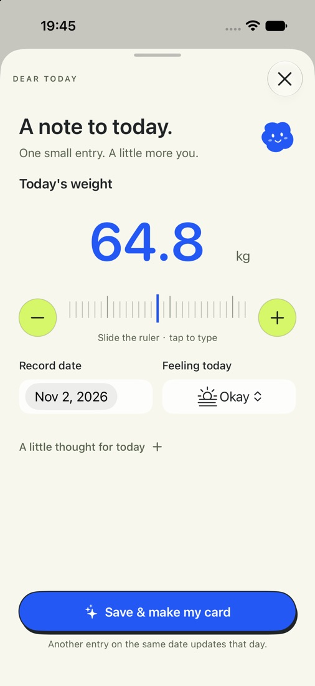
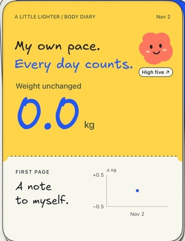
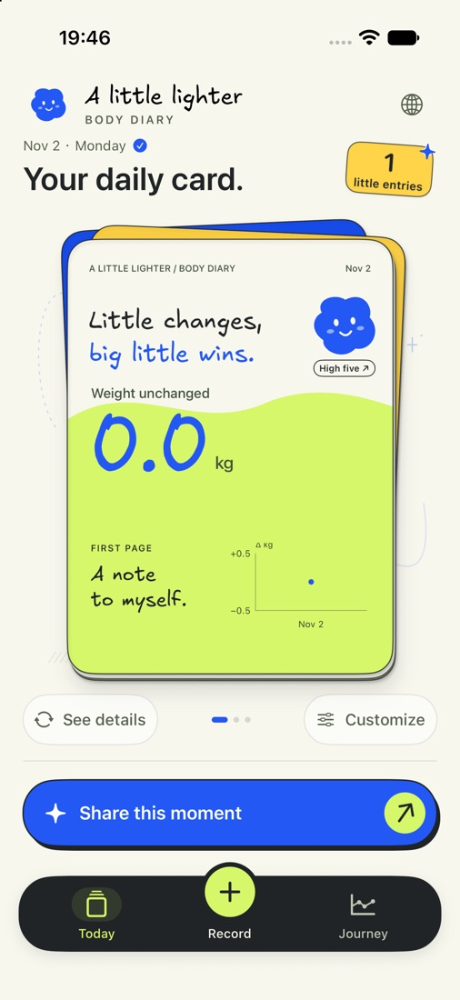
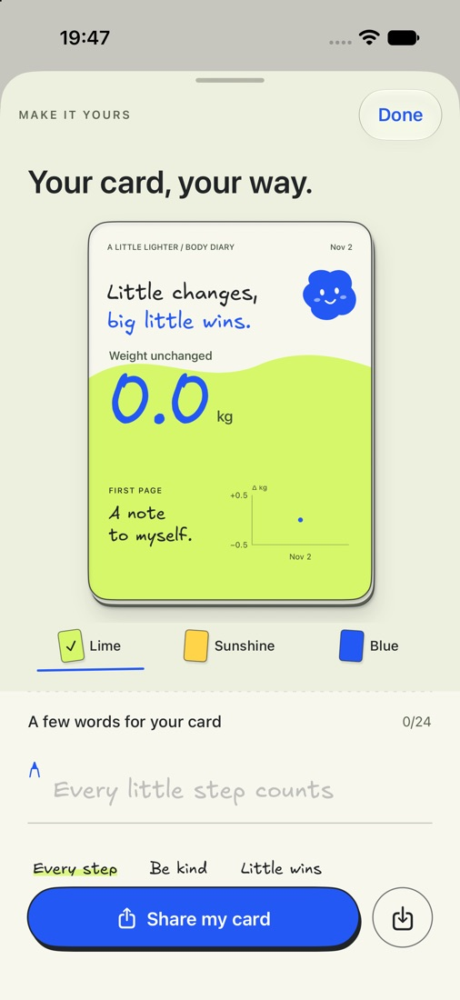

记下体重，也记下心情
按 0.1 kg 的步长记录体重。选个心情，写一句备注，留住今天的感受。
记下今天的体重和心情，回看这些日子里的变化。想留个纪念时，挑个喜欢的颜色，把进展做成一张卡片。
适用于 iPhone · iOS 17 或更高版本
美国区 App Store


按 0.1 kg 的步长记录体重。选个心情，写一句备注，留住今天的感受。
查看 7 天、30 天、90 天或全部趋势，按月份回看日记。想定个目标时，也可以在 App 里设好。

青柠、暖黄、亮蓝三种风格，加上一句自己的话。卡片可以保存到相册，也可以通过 iPhone 分享。
App 适用于运行 iOS 17 或更高版本的 iPhone。手机、平板和电脑的浏览器都可以访问这个介绍页。
可以。离线时也能记录体重和心情、回看日记和制作卡片。日记保存在你的 iPhone。
卡片正面展示累计变化、相对趋势和你写下的寄语。起始体重和当前体重留在日记里。
体重以千克（kg）记录。点击 App 首页的地球按钮，可切换英文和简体中文。